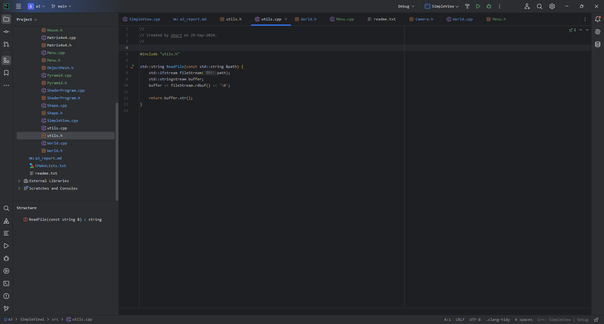
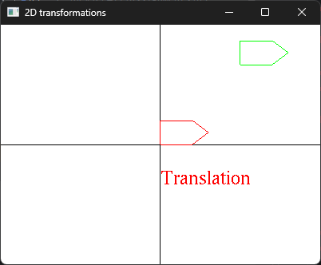
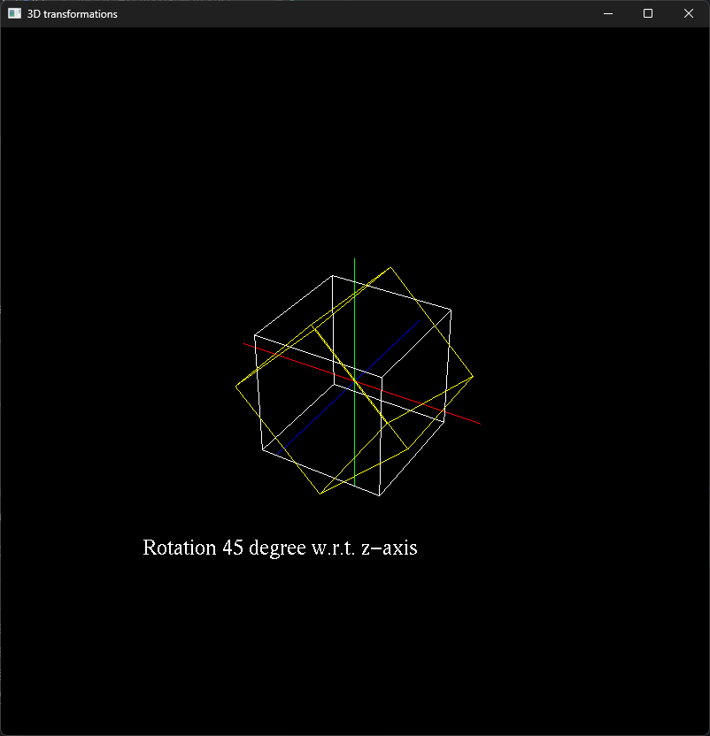
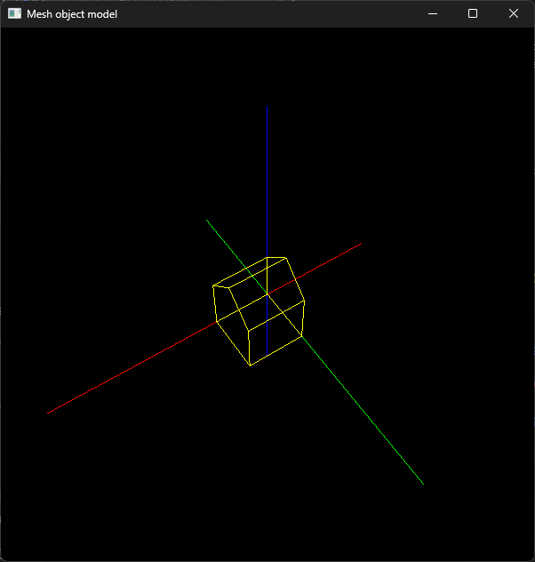

Check readme.txt for course work statement
and self-evaluation.
Q1 Transformations in CG
(description)
Q1.1 Principle of CG
transformations
What are the three basic transformations?
Rotation
Translation
Scaling
What is a composite transformation?
One or more transformations combined together.
Why Homogeneous coordinate system is used in transformation
representation and computing?
Because they’re easier to work with, and are less error prone.
Q1.2 Hand on 2D
transformations
Describe the sequence of basic 2D transformations to transform
triangle ABC to triangle A’B’C’, namely, A to A’, B to B’, and C to C’,
by writing the transformation notations and matrices in Homogeneous of
the above basic transformations. Hint: it needs 3 basic
transformations.
Compute the transformation matrix of the composite
transformation.
Column major (imagine the Latex rendered):
Apply the composite transformation matrix to A, B, C to verify that
A, B, C are transformed to A’, B’, C’, respectively.
A -> (0, 0)
B -> (4, 0)
C -> (0, 1)
Q2 CG
transformation programming (lab practice)
Q2.1 Warm up with C++
Yes.

Warmup
Q2.2 2D transformations

2D
Q2.3 3D objects and
transformations

3D
Q2.4 Mesh object model

Mesh
Q3 SimpleView1 -
transformations (programming)
I have completed this section, however, despite my best efforts, my
anti-virus keeps shooting the program down. I am not able to run this
program on my machine. Perhaps it can run on another? I don’t know.
The program does work when using GLFW as the windowing system, but
fails when using FreeGLUT.